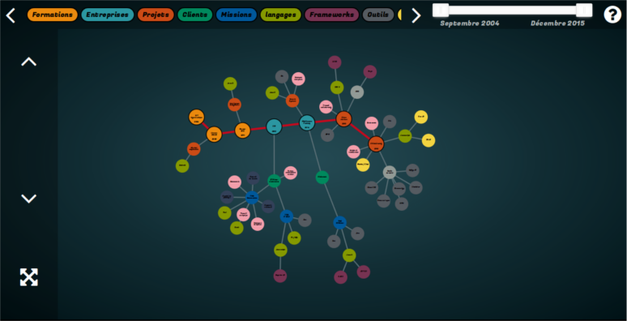
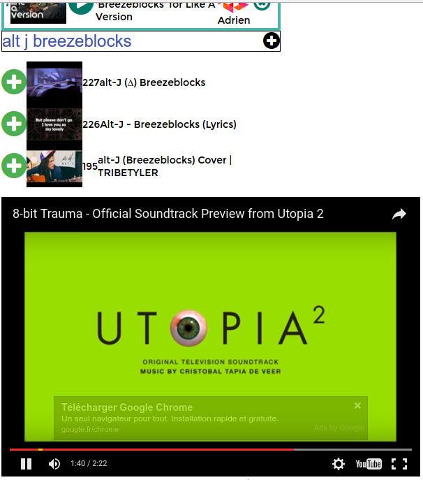
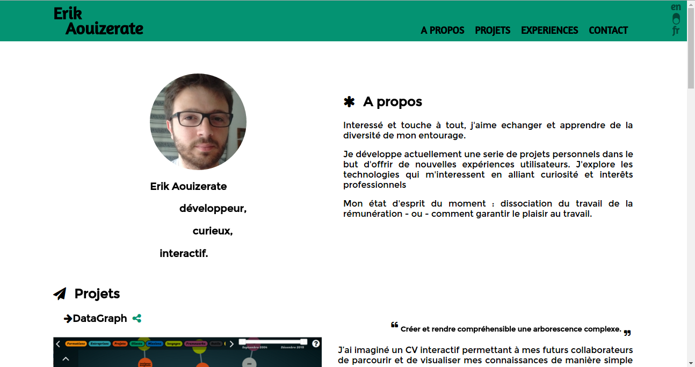
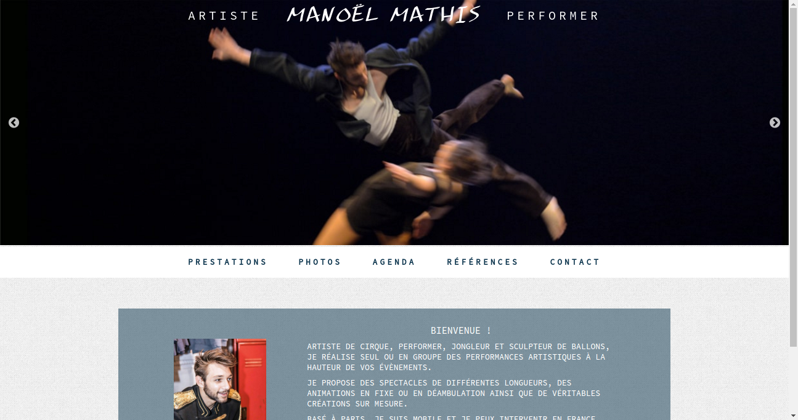

A propos
Intéressé et touche à tout, j'aime échanger et apprendre de la diversité de mon entourage.
Je développe actuellement une serie de projets personnels dans le but d'offrir de nouvelles expériences utilisateurs. J'explore les technologies qui m'interessent en alliant curiosité et interêts professionnels.
Je cherche avant tout à apporter du sens à mon travail, mon état d'esprit du moment : responsabilité citoyenne, éthique et nouvelle forme de travail.
Projets
DataGraph


Créer et rendre compréhensible une arborescence complexe.
J’ai imaginé un CV interactif permettant à mes futurs collaborateurs de parcourir et de visualiser mes connaissances de manière simple et concise.
Pour cela, l’information peut être filtrée de manière chronologique et thématique.
Trois outils sont à votre disposition :
- Vous pouvez explorer mes compétences grace a mon CV interactif
- Vous pouvez créer votre propre CV interactif grâce au data-graph editor
- Vous pouvez visualiser votre création grâce au data-graph visualisator
Le code source est disponible sur GitHub.
MeetMusic

Créer et utiliser une playlist musicale collaborative et décentralisée.
MeetMusic est une playlist collaborative grâce à laquelle chacun peut facilement et via n’importe quel terminal connecté ajouter ou enlever une musique.
Le cas d’utilisation est le suivant :
- Un terminal est le propriétaire de la playlist, c’est lui qui diffusera le son et aura certains privilèges
- Les autres terminaux sont des contributeurs et peuvent modifier la playlist
Afin de simplifier l’utilisation de cette application, il suffit de partager l’url de la playlist pour y accéder et la modifier.
On peut ajouter des musiques de youtube mais aussi des fichiers mp3 stockés sur le terminal (pc ou téléphone par exemple).
Le transfert s’effectue en peer-to-peer via la technologie webRTC.
Ce projet présente quelques limites :
- La technologie est jeune et n’est pas complètement implémentée dans les navigateurs (Safari par exemple)
- Il semblerait que les opérateurs téléphoniques n’autorisent pas encore ce type de connexion sur les réseaux mobiles (3G ou 4G)
- L’absence de serveur faisant office d’autorité centrale oblige à utiliser la technologie bitcoin / blockchain et notamment ethereum pour garantir l’identité du propriétaire de la playlist
Le code source est disponible sur GitHub.
Sites vitrines


Créer un site vitrine facilement administrable par l'utilisateur.
J’ai utilisé le générateur de site statique hugo afin de créer des sites vitrines.
Ces sites peuvent être hébergés gratuitement sur différentes plateformes car ils ne nécessitent pas de backend. De plus, la sécurité y est accrue dû à la simplicité du système.
J’ai donc réalisé mon site personnel ainsi que le site d’un ami travaillant dans les arts et spectacles : Manoël Mathis.
Cette technologie étant plutôt reservée à des développeurs, j’ai donc aussi rédigé une documentation afin de faciliter son utilisation : docs.
Expériences
Analyste développeur chez CGI
Client : ST Microelectronics
Grenoble (38) — avril 2013 — septembre 2014 — 18 mois
- Programmation d’un moteur générique de workflow
- Conception et force de proposition pour répondre aux besoins du client
- Création d’une application de test appliquée au moteur générique
- Réalisation d’une interface web ergonomique pour les utilisateurs
- Optimisation du code pour répondre aux contraintes de performance
- Technologies utilisées : javascript, angularJS, PLsql, svn
- Suivi de projet
- Préparation et participation aux comités de pilotage
- Gestion de la relation client et interlocuteur principal des utilisateurs
- Support de niveau 2 et interaction en anglais avec les collaborateurs
- Capitalisation et transfert des compétences
Développeur J2EE chez Middleware factory
Client : Globecast
Paris (75) — septembre 2014 — juin 2015 — 10 mois
- Réalisation d’un moteur de persistance dynamique orienté objet
- Développement du SI interne
- Réalisation du module de gestion de la planification des interventions
- Amélioration de la qualité du code à l’aide de sonar
- Collaboration, échange et entraide avec les autre équipes
- Technologies utilisées : java 5, jsf 2, ejb3, svn, jira
Compétences
Anglais
courant Javascript
Javascript
confortable
 Angular
Angular
confortable
 D3js
D3js
confortable
 Java
Java
expert
 Android
Android
bon
Linux
bonSql
bon Git
Git
débutant
 CSS 3
CSS 3
bon
 Web rtc
Web rtc
bon
No Sql
débutant Node js
Node js
débutant
 Blockchain
Blockchain
intéressé
 Python
Python
intéressé
Formation
| 2011 | Licence Mathématiques et Informatique Appliqués aux Sciences Sociales (MIASS) — Université Grenoble II |
| 2006 | DUT Informatique — Université Paris V |
| 2013 | Master Web Informatique et Connaissances (WIC) — Université Grenoble II |
Contact
- erik.aouizerate(at)gmail com
- github.com/mejjjor
- twitter.com/0x_erik
- CV version pdf